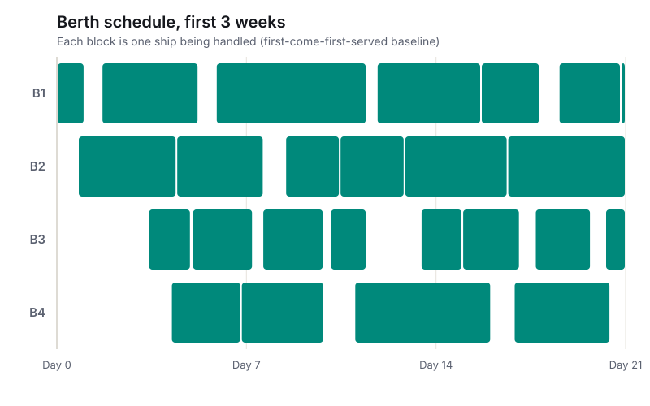

A discrete-event simulation that stress-tests how different berth scheduling rules hold up when a dry-bulk port is hit by bad weather, congestion surges and berth outages.
Ports decide which waiting ship gets the next free berth using simple scheduling rules: first come, first served, or priority for urgent or larger vessels. These rules are usually judged under average conditions, with typical arrival rates, typical handling times and normal weather. But real ports get hit by storms that slow or stop the cranes, sudden bunching of arrivals and berths going out of service. A rule that performs well on an average day can behave very differently in those conditions, and historical data rarely contains enough bad days to show it.
The goal is a simulator that lets a port operator stress-test scheduling rules across disruption scenarios before committing to one. The value is in the testing method, not in claiming to find a single optimal rule.
The setupBefore teams formed, each of us worked on the problem alone for about three weeks. My job was to build a first-come-first-served baseline that ran cleanly on the full year of arrivals. Every later scheduling rule and disruption scenario gets measured against this baseline, so it had to be right.
I built it two ways:
The two versions produce identical results. Getting there was useful in itself. Comparing them exposed a bug in my first Python version: when two berths were both free, it preferred the one that had been empty longest, instead of treating them as tied and following the stated tie-break rule. It changed which berth some ships were sent to, and would have silently skewed every comparison built on top.
View the baseline code on GitHub →
Why build it twice? No published waiting-time data exists for these berths to validate against. An independent second implementation was the most practical way to know the baseline was correct before anything else got built on it.

The average looks comfortable, but the tail tells a different story, and it isn't spread evenly. The two largest berths are the only ones that can take the biggest ships, and they're busy almost all year:
So the bigger the ship, the fewer berths it can use, and the longer it can be stuck waiting:
| Ship size | Berths it can use | Avg. wait | 95th-pct wait |
|---|---|---|---|
| Handysize (smallest) | All 4 | 1.2 h | 8.4 h |
| Handymax | All 4 | 7.1 h | 22.2 h |
| Supramax / Ultramax | 3 | 7.0 h | 27.3 h |
| Panamax / Kamsarmax (largest) | 2 | 11.6 h | 43.5 h |
This is the core tension the project explores. The two large berths are close to saturated even on a normal day, so a storm or an outage there should hit the biggest ships hardest. A rule that prioritises by size or deadline could help or hurt, depending on the scenario.
Our team is now extending the baseline into the full simulator:
This page will be updated with the scenario comparison once the project wraps up.
The vessel arrivals, berth set-up and service profiles are a coursework data pack supplied by Cargill. They are a manageable model of a dry-bulk terminal, not records of named Port of Rotterdam berths or real operations. The weather data is model-based reanalysis, and the disruption thresholds are classroom operating rules, not published port limits.